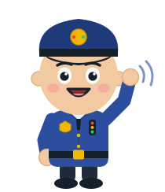
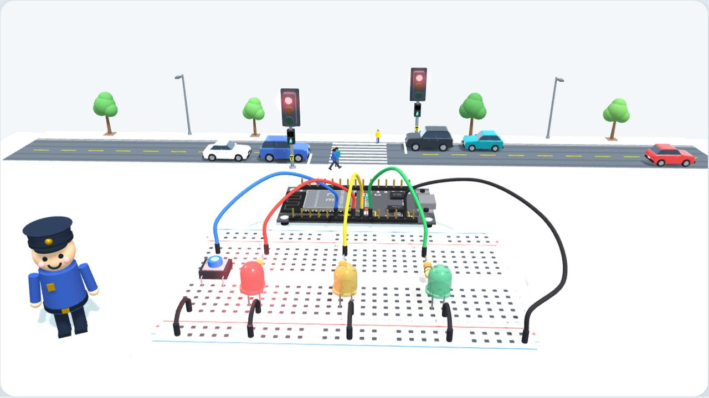

Self-watering plant
A soil sensor notices when the plant is thirsty and switches on a small pump. No more dried-out plants during the holidays.
Uses: sensors, analog readings, if/else
A free KundaKode course · ages 10–15 · no experience needed
With a tiny computer called an ESP32, a few wires and real Python code, your child builds a smart traffic light, teaches it to listen to a button, to sense the dark, and to talk to a phone. These are the same skills engineers use for smart homes, robots and the Internet of Things.


Not just toys
The course teaches the building blocks: outputs, inputs, sensors, decisions and Wi-Fi. With the same board and one extra sensor, kids can go on to build projects like these for their own home and school.
A soil sensor notices when the plant is thirsty and switches on a small pump. No more dried-out plants during the holidays.
Uses: sensors, analog readings, if/else
A motion sensor switches the lights off when a room is empty. Home automation that lowers the electricity bill.
Uses: inputs, timers, outputs
A magnet switch beeps and sends an alert to a phone when a door opens while nobody is home.
Uses: button-style inputs, a buzzer, Wi-Fi
Two wires under the sink or the washing machine detect water and warn the family before the floor floods.
Uses: sensors, alarms, phone alerts
Measures temperature and fresh air, and shows a traffic light: green is fine, red means open a window.
Uses: the traffic light from lesson 1, sensors
A distance sensor lights green, yellow and red as the car gets close to the garage wall.
Uses: distance sensing, LEDs, decisions
For parents
Every lesson builds something that really works, and explains why each wire, hole and line of code is there. Kids learn the way engineers work: plan it, build it, test it, fix it.
🛡️ Safe by design: the board runs on 3.3 volts from a USB cable, never from the wall socket. Lessons use proper engineering words, explained in plain language first.
What you need
Every lesson works on screen first, so you can start today. To build it for real, buy one ESP32 starter kit instead of collecting parts one by one: it is simpler, usually cheaper, and the parts are made to work together.
💡 Shopping tip: search for “ESP32 starter kit DevKit V1 30-pin”. Kits like this usually cost around $20–40, depending on the shop and how many sensors are included.
Any computer works for the lessons. To send code to the board with one click, use Chrome or Edge and our Run on my ESP32 page: nothing to install.
The first time, the same page installs MicroPython on the board for you (it takes about a minute).
Prefer a classic editor? Thonny (free) works too.
Free, with no accounts and no ads. Lessons run in the browser and save progress only on this device; no personal data is collected.
The animations show how circuits work. They are not safety tests, so please check real circuits before they are plugged in.
One new idea per lesson, about 45 minutes each. Kids see every wire go in on a 3D workbench, answer short quizzes, earn badges and a certificate, then build it for real.
Start with lesson 0 on screen today. Add the kit when you are ready.